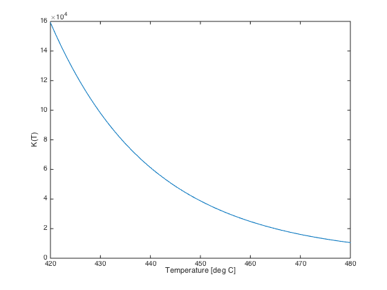

Contact Process for Sulfuric Acid
Contents
- Problem Description
- Required Matlab
- Physical Properties
- Reaction Stoichiometry
- Standard Enthalpy of Reaction
- Standard Gibb's Free Energy of Reaction
- Standard Enthalpy of Reaction
- Equilibrium Constant from the van't Hoff Equation
- Reactor Material Balance
- Solve for Equilibrium Extent of Reaction
- Equilibrium Composition
Problem Description
One step in the Contact Process for the production of sulfuric acid is the homogeneous gas phase conversion of sulfur dioxide (SO2) to sulfur trioxide (SO3) via the reaction
2 SO2 (g) + O2 (g) <-> 2 SO3 (g)
The reaction is conducted in a steady-state continuous reactor with a vanadium oxide (V2O5) catalyst operating at 450 deg C and 2 atm. The feed is a 100 kgmol/hr equimolar mixture of sulphur dioxide and oxygen.
- Calculate the standard enthalpy, Gibb's free energy, and entropy of reaction.
- Compute the equilibrium constant at the reactor operating conditions.
- Set up and solve for the composition of the reactor exit stream.
Required Matlab
- displaytable.m
Physical Properties
For this problem we will store data in Matlab vectors. We use indices names after the chemical species to make the code easier to understand.
O2 = 1; species{O2} = 'Oxygen';
SO2 = 2; species{SO2} = 'Sulfur Dioxide';
SO3 = 3; species{SO3} = 'Sulfur Trioxide';
% Standard Gibb's free energy of formation [J/gmol]
Gf(O2) = 0;
Gf(SO2) = -299900;
Gf(SO3) = -370660;
% Standard Enthalpy of formation [J/gmol]
Hf(O2) = 0;
Hf(SO2) = -296810;
Hf(SO3) = -394930;
Reaction Stoichiometry
nu(O2) = -1;
nu(SO2) = -2;
nu(SO3) = 2;
displaytable([nu',Gf'/1000,Hf'/1000],s,{'Stoichiometric Coeff.','Gf [kJ/gmol]','Hf [kJ/gmol]'});
Stoichiometric Coeff. Gf [kJ/gmol] Hf [kJ/gmol] Oxygen -1 0 0 Sulfur Dioxide -2 -299.9 -296.81 Sulfur Trioxide 2 -370.66 -394.93
Standard Enthalpy of Reaction
Hrxn = Hf*nu';
displaytable(Hrxn/1000,'Standard Enthalpy of Reaction [kJ/gmol] = ');
Standard Enthalpy of Reaction [kJ/gmol] = -196.24
Standard Gibb's Free Energy of Reaction
Grxn = Gf*nu';
displaytable(Grxn/1000,'Standard Gibb''s Energy of Reaction [kJ/gmol] = ');
Standard Gibb's Energy of Reaction [kJ/gmol] = -141.52
Standard Enthalpy of Reaction
Srxn = (Hrxn - Grxn)/298.15;
displaytable(Srxn,'Standard Gibb''s Energy of Reaction [J/gmol-K] = ');
Standard Gibb's Energy of Reaction [J/gmol-K] = -183.53
Equilibrium Constant from the van't Hoff Equation
Here we implement the van't Hoff equation as a Matlab function
R = 8.314; lnK = @(T) -(-Srxn + Hrxn/T)/R; K = @(T) exp(lnK(T)); T = 420:480; plot(T,arrayfun(K,T+273.15)); xlabel('Temperature [deg C]'); ylabel('K(T)'); displaytable(K(450 + 273.15),'Equilibrium Constant at 450C = ');
Equilibrium Constant at 450C = 38750
Reactor Material Balance
n{O2} = @(x) 50 - x;
n{SO2} = @(x) 50 - 2*x;
n{SO3} = @(x) 2*x;
nTotal = @(x) n{O2}(x) + n{SO2}(x) + n{SO3}(x);
y{O2} = @(x) n{O2}(x)/nTotal(x);
y{SO2} = @(x) n{SO2}(x)/nTotal(x);
y{SO3} = @(x) n{SO3}(x)/nTotal(x);
Solve for Equilibrium Extent of Reaction
P = 2;
T = 450 + 273.15;
f = @(x) y{SO3}(x)^2 /(y{SO2}(x)^2*y{O2}(x)*P) - K(T);
x = fzero(f,[0,24.99999]);
displaytable(x,'Equilibrium Extent of Reaction [kgmol/hr] = ');
Equilibrium Extent of Reaction [kgmol/hr] = 24.846
Equilibrium Composition
displaytable([y{O2}(x); y{SO2}(x); y{SO3}(x)],species,'Mole Fraction');
Mole Fraction Oxygen 0.3347 Sulfur Dioxide 0.0041053 Sulfur Trioxide 0.66119